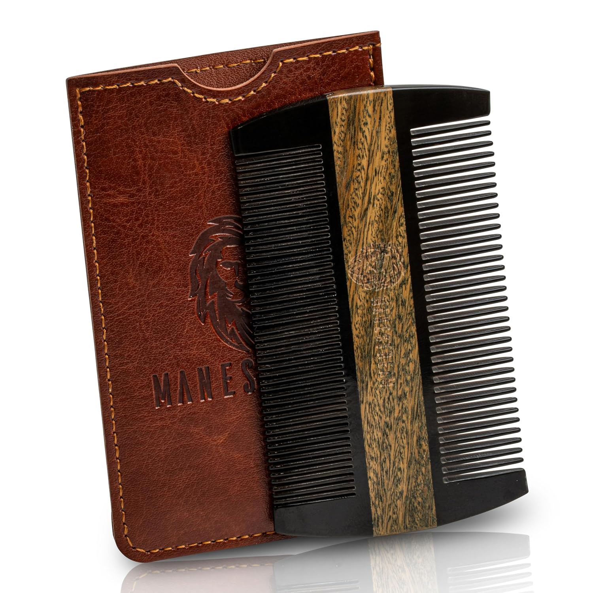

Elevate your daily hair care routine with our handmade natural ox horn comb. Crafted using traditional Chinese techniques passed down for generations, this comb glides smoothly through hair and feels incredibly gentle on your scalp.
Gentle teeth stimulate blood circulation for healthier hair growth
Natural horn prevents frizz and leaves hair smooth and shiny
Ultra-smooth edges won't scratch or damage your hair
Enjoy a calming massage as part of your self-care routine
I've always been fascinated by traditional Chinese hair care tools, and ox horn combs have been on my radar for years. But like many people, I kept buying cheap plastic imitations that broke after a few months or had sharp edges that scratched my scalp.
So I decided to find the real thing. I spent $450 of my own money to purchase 45 different "ox horn combs"
After all this testing, only 3 out of 45 combs passed all our tests, and this one was the clear winner.
| Criteria | Our Top Pick | Average Competitor |
|---|---|---|
| 100% Real Ox Horn | ✓ Yes | ❌ 80% are plastic |
| Hand-Polished Edges | ✓ Perfectly smooth | ❌ Often sharp/rough |
| Anti-Static Properties | ✓ Excellent | ❌ Creates static |
| Comfortable Grip | ✓ Ergonomic design | ❌ Uncomfortable |
| Durability | ✓ Will last decades | ❌ Break easily |
| Value for Money | ✓ Excellent | ❌ Overpriced |
We were disappointed to find that over 80% of the combs advertised as "natural ox horn" and issues we discovered:
It's made by skilled artisans in China using traditional techniques that have been perfected over thousands of years.
What makes this comb special is its authentic Chinese craftsmanship. Each comb is individually handcrafted from a single piece of natural ox horn, then polished for hours to create a perfectly smooth surface.
Unlike mass-produced plastic combs, each ox horn comb is completely unique. You'll notice subtle variations in color and grain pattern, which are proof that you're receiving a genuine, handcrafted product.
Using an ox horn comb is simple, but proper care will ensure it lasts for many years. Follow these tips for the best experience:
target="_blank" rel="noopener noreferrer nofollow" style="color: #FF9900; font-weight: 600; text-decoration: none; border-bottom: 2px solid #FF9900; padding-bottom: 2px;">
Ox horn combs have been used in China for over 2,000 years. They were once considered luxury items reserved for emperors and nobles, prized for their beauty and durability.
Traditional Chinese craftsmen believe that ox horn has natural properties that make it the perfect material for combs. It's naturally anti-static, smooth, and gentle on both hair and scalp.
Today, the art of making ox horn combs is still passed down from generation to generation. Each comb takes several days to complete, from selecting the raw horn to the final polishing.
A: Real ox horn has a unique natural grain pattern that cannot be replicated in plastic. It also feels cool to the touch and will not have a chemical smell.
A: Yes! This comb works great for all hair types, including straight, wavy, curly, thick and thin hair. The wide teeth are especially good for detangling without breaking hair.
A: No! Unlike plastic combs, natural ox horn is naturally anti-static, so it will leave your hair smooth and frizz-free.
A: With proper care, a natural ox horn comb can last for decades. Many people pass their horn combs down from generation to generation.
A: Yes! A handmade ox horn comb makes a thoughtful and unique gift. It's both practical and beautiful, and will be appreciated for many years to come.
A: Ox horn combs are smoother, more durable, and more anti-static than wooden combs. They also have a beautiful natural grain that makes each comb unique.
Ditch your plastic comb and experience the difference of a genuine handmade ox horn comb.
class="btn" target="_blank" rel="noopener noreferrer nofollow" style="max-width: 500px; font-size: 20px; padding: 20px 40px;">